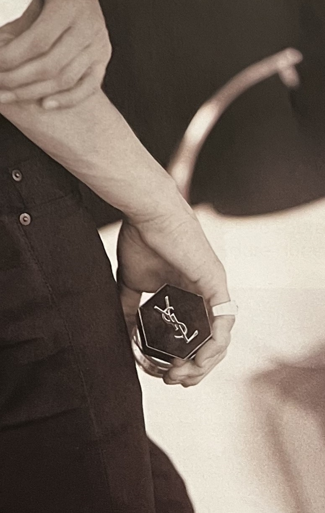

NUEVA ADICCIÓN

Absoluta Seducción
Si eres una mujer apasionada te fascinará la nueva fragancia de Versace Eros Pour Femme, una expresión absoluta de poder y seducción. Con suaves notas cítricas y nítidos aromas frutales, tiene una dimensión sensual que no podrás dejar ir. Además, su bellísimo frasco lleno de referencias a la mitología griega que se fusiona con la elegancia de la marca. Una verdadera obra de arte a cargo de la directora artística Donatella Versace.
Aroma Masculino
Para ellos está L’homme Ultime, la última fragancia de Yves Saint Laurent que personifica la perfección del hombre moderno y que busca encarnar los pilares de la masculinidad de hoy: magnetismo, confianza y estilo en aromas amaderados con esencia de pomelo. El rostro de la campaña es el modelo neozelandés Vinnie Woolston, un nombre que se ha hecho tremendamente recurrente en el mundo de la moda y la alta costura.
